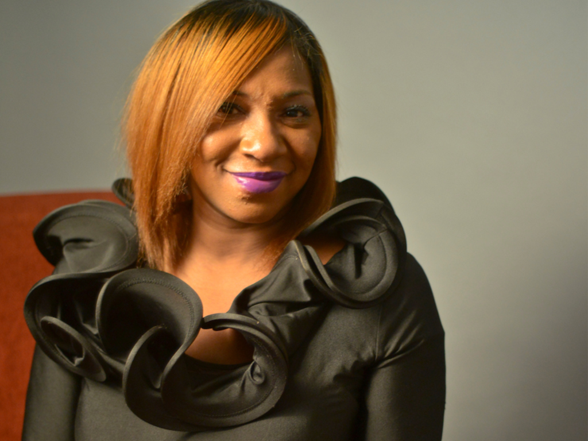
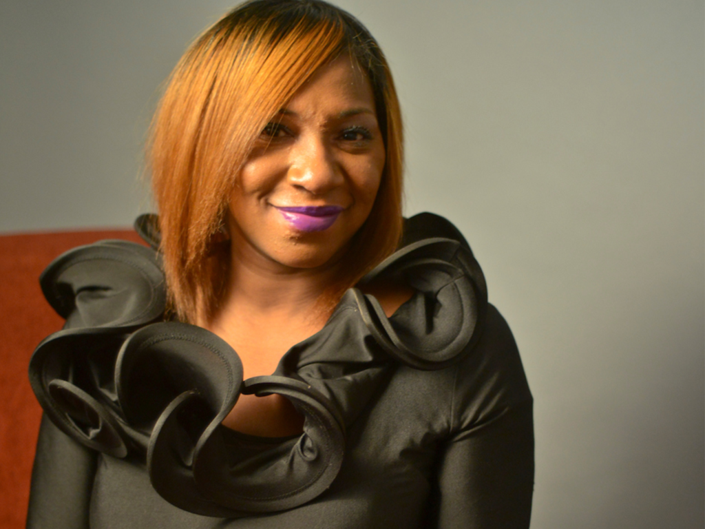

Meet the Makers

Samora Coles
- Founder and Executive Director
- Ms. Coles is the Founder and Executive Director of the Alex House Project in Red Hook, Brooklyn. In 2006, while employed by a local neighborhood-based non-profit, Red Hook resident, Samora Coles was asked to identify a need in her neighborhood and build a program for it.
- Under her leadership, this grassroots organization has transformed young mothers and their children by developing structured programs that specifically deal with creating a new self-perception and a new atmosphere for re-parenting. Though this holistic approach young mothers create and disseminate and are leaders of the programs. In early 2015, young dads in the Red Hook community approached Ms. Coles seeking nurturing and guidance. The request for her to assist young dads was something never thought about until that day.
- Ms. Coles has over 12 years of direct youth work experience and has worked in the area of women’s health for the last 10 years. Formerly, the Reproductive Health Coordinator at the Red Hook Initiative, teaching young girls and women reproductive health as well as training young girls how to teach reproductive health to their peers. Ms. Coles also spent time working at Harlem Children’s Zone developing educational materials and related curriculum tools and resources on reproductive health, staff development and training as well as supportive reproductive health counseling for adolescents.
 

Rebecca Fishburne
Director of Programs/Family Worker
Rebecca brings a background in youth development and also serves as our family worker/case manager, connecting our parents to support services like mental health, child care, employment, higher education, as they transition throughout AHP programs. Her expertise as a family worker is credited by New York City DYCD (Department of Youth and Community Development).
Shaquana Cooke
Program Coordinator
Shaquana oversees all evening and weekend activities for young mothers participants, trainees, and volunteers within AHP. Ms. Cooke brings her expertise in community organizing and youth development.
Board of Directors